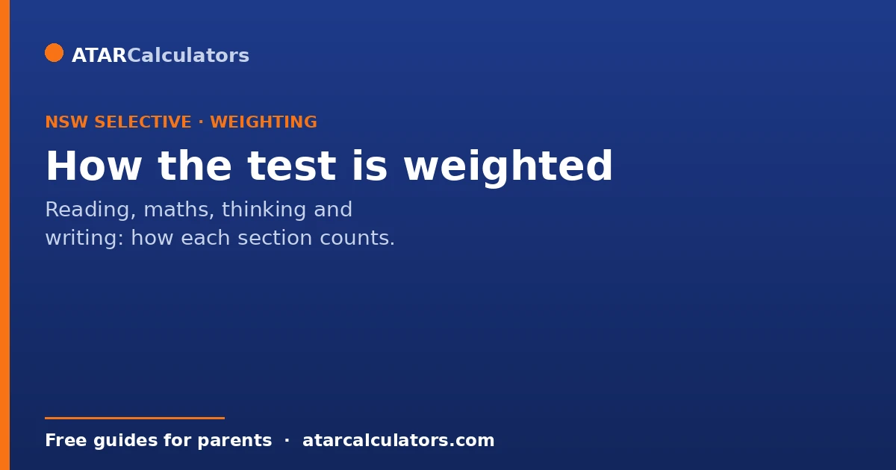
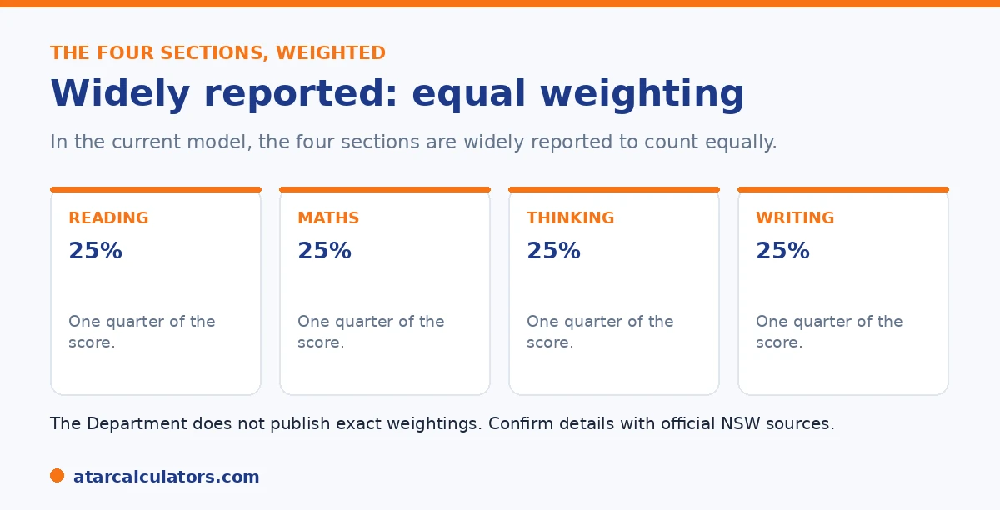

Here is the short version. In the current model, the four sections of the selective test are widely reported to count equally, at one quarter each. This replaced an older scheme where Thinking Skills counted for more and Writing for less. So Writing now matters more than it used to, and no single section can carry a result. The Department does not publish the exact weightings, so treat precise figures as a guide, not gospel.
Knowing how the sections are weighted shapes how you prepare. A few years ago, Thinking Skills was the section to chase. That is no longer the case.
Below is the current picture and what it means for your plan. To estimate a result from practice scores, use our NSW selective calculator.
Key takeaways
- The four sections are widely reported to count equally now.
- That is one quarter each, for Reading, Maths, Thinking Skills, and Writing.
- The old scheme weighted Thinking Skills more and Writing less.
- So Writing now matters more than it used to.
- No single section can carry a result.
- The Department does not publish exact weightings.
The current model: equal weighting
In the current model, the four sections are widely reported to count equally. That is Reading, Mathematical Reasoning, Thinking Skills, and Writing, each worth one quarter of the score.

One caution comes first. The Department does not publish the exact weightings. Equal weighting is the common understanding across coaching and parent guides, so treat it as a strong guide rather than an official figure.
How it used to work
The older scheme was uneven. Thinking Skills carried more weight, often described as the largest section, and Writing carried less. Many families responded by drilling Thinking Skills and treating Writing as an afterthought.
That approach no longer fits. Under equal weighting, neglecting any section costs the same as neglecting any other.
Why the change matters
The shift to equal weighting rewards an all-round student. A child cannot lean on one strength to carry the result, and a single weak section pulls the whole profile down.
It also lifts the importance of Writing, which is now a typed task with more time than before. A strong writer gains ground they would have lost under the old scheme.
Want to see how balanced a set of practice scores looks?
Try the NSW selective calculator →What this means for preparation
The strategy follows from the maths. Your child's weakest section limits the result, so the biggest gains come from lifting the lowest area, not polishing the strongest. Aim for an even profile across all four.
In practice, that means giving real time to Writing and Thinking Skills, not only Reading and Maths. For a full plan, see our 12-month preparation guide.
Because the four sections now carry equal weight, the most efficient preparation is diagnostic, not uniform. Start by finding out where your child actually stands in each of reading, mathematical reasoning, thinking skills and writing, then direct the most time to the weakest one. This is because that is the section holding the total back. This is very different from the instinct to drill the subjects a child already enjoys, which feels productive but moves the score least. Writing deserves particular attention. It is now a full quarter of the result, yet it is the section families most often under-prepare, partly because progress is harder to measure than in maths. Thinking skills is the next most neglected. This is because it is unlike normal schoolwork and children rarely meet it elsewhere. A balanced plan might spend more time on writing and thinking skills in the early months, bringing them up to the level of the child's stronger sections. Closer to the test, it can shift to timed full-length practice, so pace and stamina are in place. The goal is an even profile across all four. Under equal weighting, a child who is good at everything beats a child who is brilliant at one thing and weak at another.
A quick note on each section
Each section tests something different. Reading checks comprehension and meaning. Mathematical Reasoning checks problem solving, with no calculator. Thinking Skills checks logic and reasoning, and is the least familiar to most students. Writing checks ideas, structure, and control of language in one typed task.
Because they count equally, a balanced effort across all four is the sensible plan. For the full structure, see our 2026 format guide.
Why equal weighting is fairer
With equal weighting, no single section decides the outcome. A student who is balanced across reading, mathematical reasoning, thinking skills and writing is rewarded, rather than one who is strong in just one area.
So the model favours all-round ability. That is generally seen as a fairer way to identify students who will thrive in a demanding selective environment.
What equal weighting means for your child
Because the sections count evenly, a single weak section drags down the whole score. There is nowhere to hide a soft spot behind a very strong one.
So spread preparation across all sections rather than polishing an already strong area. Lifting the weakest section usually does more for the overall result than perfecting the best one.
The four sections in brief
The score is built from four sections: Reading, Mathematical Reasoning, Thinking Skills, and Writing. Each contributes toward the placement score, so all four matter for the final result.
So think of preparation as covering four fronts. Strength in one cannot fully rescue a weakness in another, because each section pulls its own weight in the total.
Do not neglect the writing
Because writing counts equally with the other sections, it is a mistake to under-prepare it. Some families focus on reading and maths and treat writing as an afterthought, then lose ground there.
So give writing real attention. Practising a quick plan-then-write routine to a prompt builds a skill that carries the same weight as every other section in the score.
Common questions
How are the selective test components weighted?
In the current model the four sections are widely reported to count equally, at one quarter each. This replaced an older scheme where Thinking Skills counted more. The Department does not publish exact weightings, so treat figures as a guide.
Which part is worth the most?
Under the current model, none. The four sections are widely reported to count equally. In the older scheme Thinking Skills carried more weight, but that is no longer the common understanding.
Does Writing count as much as Reading?
In the current model, yes. Writing is widely reported to count equally with the other three sections, which is a change from the old scheme where it counted less. So Writing now deserves real preparation time.
Should we focus on Thinking Skills?
Not at the expense of the others. Thinking Skills once carried more weight, but the current model is widely reported to weight all four equally. Your child's weakest section limits the result, so balance matters most.
Did the weighting change?
Yes. The current model is widely reported to weight the four sections equally, replacing an older scheme where Thinking Skills counted more and Writing less. The Department does not publish the exact figures.
Check how balanced a result is
Enter practice section results to see a rough competitiveness guide. Free, and no signup.
Open the NSW selective calculator →Related guides
This guide is general information for parents, not formal advice. The NSW Department of Education sets the rules, and details like dates, weightings and the equity model can change. It does not publish section weightings, the score total, or school cut-off scores. So always confirm current details on the official NSW selective high schools pages. Reviewed by the ATARCalculators Editorial Team.